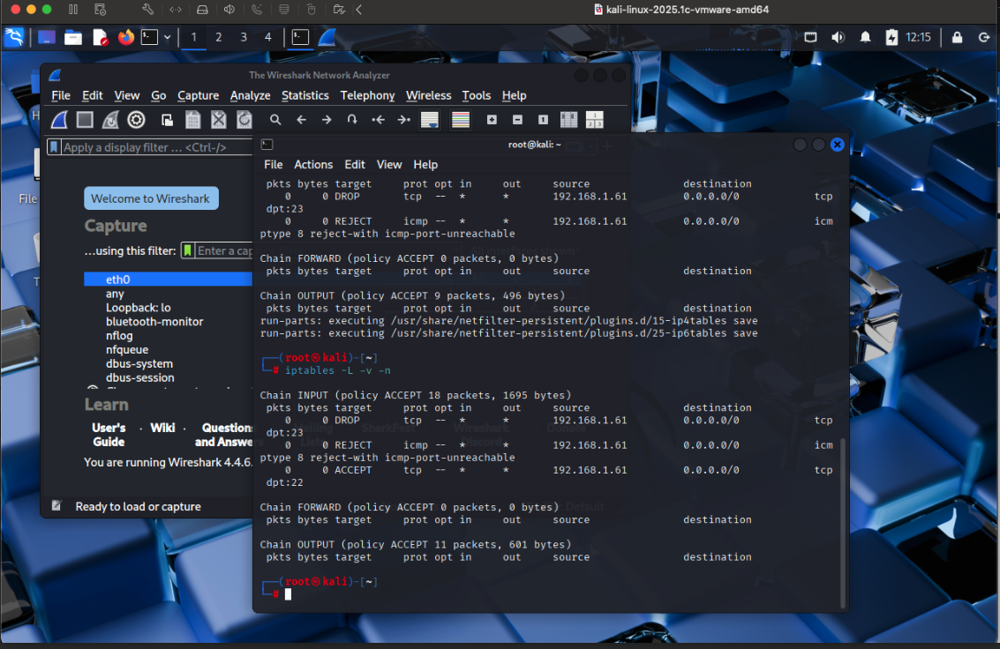

Packet Analysis Project
Objective of the Project
Use Wireshark to capture and analyze the traffic passing through the server's network interface, while ensuring that you
comply with the filtering rules set by the IP tables and the external firewall. The goal is to:
- Capture live traffic on the endpoint/server using wireshark
- Identify and filter traffic that is allowed or blocked by the firewall
- Analyze the captured traffic to determine whether your IP table is correctly configured to block unauthorized access attempts

Tools to Use:
Step-by-Step Process:
- Install wireshark (if not already installed)
- Grant permissions to capture packets without root:
- sudo usermod -aG wireshark $USER
- newgrp wireshark
- Set rule to be persistence after reboot:
- sudo apt install iptable-persistent
- sudo netfilter-persistent save
- Configure IP tables to block telnet and allow SSH:
- sudo iptables -A INPUT -p tcp --dport 23 -j DROP
- sudo iptables -A INPUT -p tcp --dport 22 -j ACCEPT
- Start Wireshark and select the network interface to capture packets (e.g, eth0 or wlan0).
- Apply a capture filter to focus on relevant traffic:
- tcp port 22 or tcp port 23
Traffic Filter in Wireshark:
- tcp.port == 22 -- to see SSH traffic
- tcp.dstport == 23 -- to see blocked Telnet Request
- icmp.type == 0 -- to see Ping Request
- ip.addr == 192.168.75.131 -- to focus on traffic to/from my server
- tcp.flags.syn == 1 && tcp.flags.ack == 0 -- to identify connection attempts(new sessions)